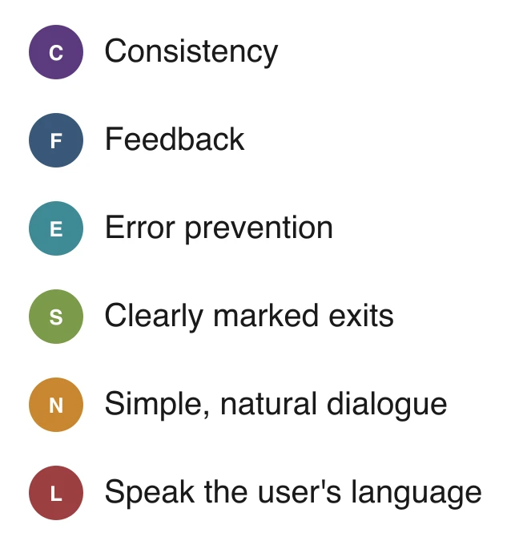

Overview
HAUS is Gazeta do Povo's multiplatform product focused on architecture, interior design, style, and culture. Their main plataform was a printed magazine.
They contacted the agency I worked for to design a website showcasing the projects, architects, and products featured in their magazine.
This was one of my first projects as a UI/UX designer, taking around two weeks from benchmark research to generating alternatives and idealizing this concept for a website.
For this project the challenge was to create a concept for a website connecting these three pillars: a gallery of real projects for inspiration, a shop of decor products and a directory of architects — all cross-linked, so a piece you like in a project leads straight to buying it and know more about their creators.
To take a step further I idealized an extra mobile app that would let people preview furniture and decor itens in their own interior using their phone's camera — It was a way of visualizing the decoration before buying it.
Benchmarking
Before sketching any screens, I ran a heuristic evaluation of five sites with similar goals — HC Store, Etch, Grovemade, Fubiz Shop, and Joined & Jointed — to map out what worked well and what didn't, and to catch requirements the brief hadn't covered.
I checked a few pages of each site against the six usability heuristics below, tagging every finding with the principle it related to, so patterns across the five sites were easier to spot. Green arrows indicate the positive practices, and the red arrows the negative ones.

Key takeaways
- Large, focused product photography consistently read as more premium than cluttered grids.
- Clear category filters and visible navigation cues reduced user errors.
- Overlays that dim the whole page, like on hover, can pull focus away from the product itself.
- Showing stock and availability directly on listing pages helped users decide faster.
- A dedicated page per designer or maker made craftspeople feel like part of the brand story.
Landing page
"Inspire-se, decore, inove" — get inspired, decorate, innovate. The landing page opens with a rotating gallery of decorated spaces, then surfaces the three pillars of the site side by side: Products, Architects, and Projects.

Projects page
Every month, Haus publishes a new decorated space. The projects page leads with that month's featured room, alongside the products used in it, and a grid of the month's other publications below.

Architect page
Opening a project introduces the architect behind it, alongside their descripption of the space and the products they used on the decoration or products with a similar style that would fit that interior.

Products page
Each product page presents material, dimensions, country of origin, colors available and live stock count. These pages also include related products and "suggested for you" to keep people browsing.

Decoration app
The Haus app lets people place real products from the catalog into a photo of their own room before buying anything. Take a photo, pick a room type and object category, place and resize the piece, then share the result or buy the whole decoration.